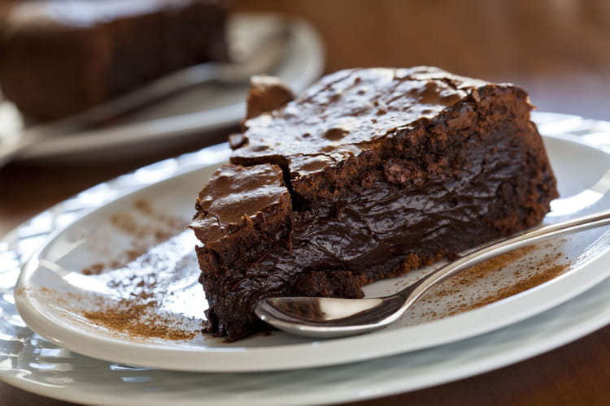

Gateau au chocolat
"Cette recette facile du gateau au chocolat est un grand classique. Elle fera plaisir aux plus gourmants"

| Difficulté |
Préparation |
Cuisson |
Temps total |
| Faclice |
10 min |
25 min |
35 min |
Ingrédient
- Chocolat noir : 200g
- Sucre : 150g
- Beurre : 200g
- Oeufs : 4
- Farine : 80g
Préparation
- Faire fondre le chocolat avec le beurre
- Mélanger le sucre, les oeufs et la farine
- Mélanger le tout pour faire une pate
- Mettre au four